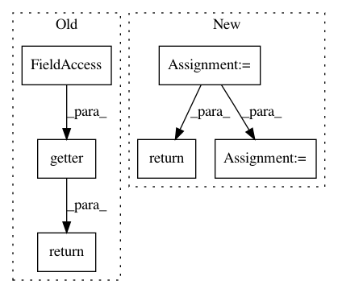

cc9194708510631c93528e8337a4526b03dbdb7d,onnx_tf/handlers/backend/lstm.py,LSTM,_custom_getter,#Any#Any#Any#Any#Any#Any#,45
Before Change
w_b = tf.transpose(tf.concat([w_b_i, w_b_c, w_b_f, w_b_o], 0))
r_b = tf.transpose(tf.concat([r_b_i, r_b_c, r_b_f, r_b_o], 0))
return tf.Variable(tf.add(w_b, r_b))
return getter(name, *args, **kwargs)
// Only use_peepholes is True,
// will try to get w_f_diag, w_i_diag, w_o_diag
// onnx P[iof]
if names[-1] in ["w_f_diag", "w_i_diag", "w_o_diag"]:
After Change
return weight_variable
if names[-1] == "bias":
bias_variable = tensor_dict[get_variable_name(node, cls.bias_var_name)]
if len(node.inputs) >= 4:
// onnx Wb[iofc], Rb[iofc]
if is_bidirectional:
b = tf.split(tensor_dict[node.inputs[3]], 2)[index]
else:
b = tensor_dict[node.inputs[3]]
w_b, r_b = tf.split(tf.squeeze(b), 2)
w_b_i, w_b_o, w_b_f, w_b_c = tf.split(w_b, 4)
r_b_i, r_b_o, r_b_f, r_b_c = tf.split(r_b, 4)
w_b = tf.transpose(tf.concat([w_b_i, w_b_c, w_b_f, w_b_o], 0))
r_b = tf.transpose(tf.concat([r_b_i, r_b_c, r_b_f, r_b_o], 0))
bias_variable.assign(tf.add(w_b, r_b))
return bias_variable
// Only use_peepholes is True,
// will try to get w_f_diag, w_i_diag, w_o_diag
// onnx P[iof]
if names[-1] in ["w_f_diag", "w_i_diag", "w_o_diag"]:
if is_bidirectional:
p = tf.split(tensor_dict[node.inputs[7]], 2)[index]
else:
p = tensor_dict[node.inputs[7]]
if names[-1] == "w_f_diag":
w_f_variable = tensor_dict[get_variable_name(
node, cls.peephole_weight_forget_var_name)]
w_f_variable.assign(tf.split(p, 3, axis=1)[2])
return w_f_variable
if names[-1] == "w_i_diag":
w_i_variable = tensor_dict[get_variable_name(
node, cls.peephole_weight_input_var_name)]
w_i_variable.assign(tf.split(p, 3, axis=1)[0])
In pattern: SUPERPATTERN
Frequency: 3
Non-data size: 6
Instances
Project Name: onnx/onnx-tensorflow
Commit Name: cc9194708510631c93528e8337a4526b03dbdb7d
Time: 2020-11-16
Author: chhuang@us.ibm.com
File Name: onnx_tf/handlers/backend/lstm.py
Class Name: LSTM
Method Name: _custom_getter
Project Name: onnx/onnx-tensorflow
Commit Name: bfba822bf41d8cd4e37f53c0a2d80bc1865e5972
Time: 2020-11-19
Author: chhuang@us.ibm.com
File Name: onnx_tf/handlers/backend/rnn.py
Class Name: RNN
Method Name: _custom_getter
Project Name: deepmind/sonnet
Commit Name: 1f3f060c08bd4b0e9635ff5e04205cef184cc9b3
Time: 2019-06-17
Author: petebu@google.com
File Name: sonnet/src/replicator.py
Class Name:
Method Name: replica_local_creator